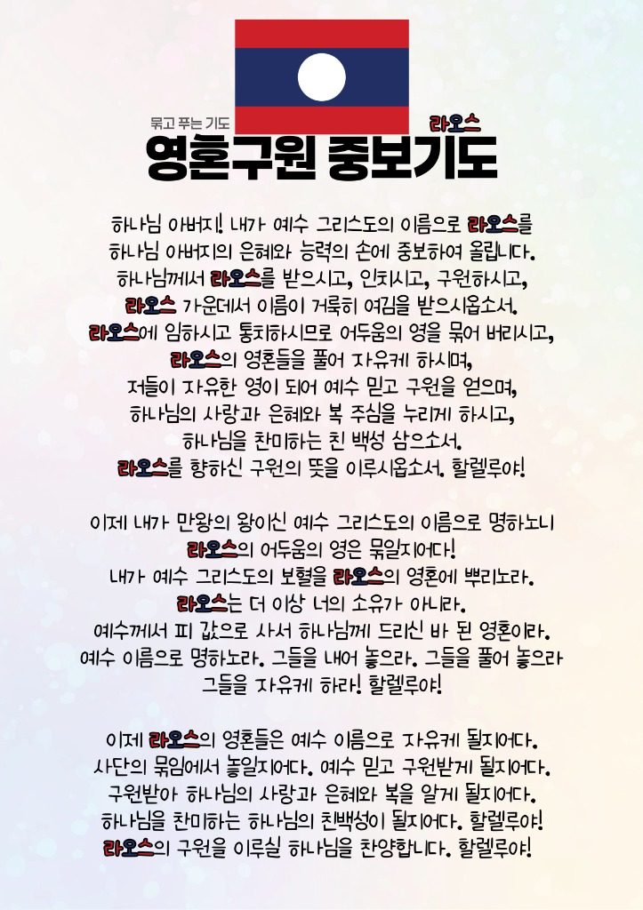

우리가족 은혜톡
말씀과 기도로 하나되는 우리 가족
누구이신가요?
... (맥체인 성경읽기)
우리가족 오늘 읽기 0% 완료
📖 로딩중...
🍞 로딩중...
로딩중...
💡 오늘 아이들이 읽는 말씀 (신약)
말씀을 불러오는 중입니다...
🙏 함께 기도해요
"하나님, 오늘 우리 자녀들이 읽은 신약의 말씀이 우리 가족 모두의 마음에 깊이 새겨지게 해주세요. 가족이 서로 배려하고 사랑을 나누는 따뜻한 하루가 되게 하옵소서. 예수님의 이름으로 기도합니다. 아멘."
가정예배
오후 7시 00분 시작
1. 신앙고백
▼사도신경으로 우리의 신앙을 고백합니다.
전능하사 천지를 만드신 하나님 아버지를 내가 믿사오며,
그 외아들 우리 주 예수 그리스도를 믿사오니,
이는 성령으로 잉태하사 동정녀 마리아에게 나시고,
본디오 빌라도에게 고난을 받으사 십자가에 못 박혀 죽으시고,
장사한 지 사흘 만에 죽은 자 가운데서 다시 살아나시며,
하늘에 오르사 전능하신 하나님 우편에 앉아 계시다가,
저리로서 산 자와 죽은 자를 심판하러 오시리라.
성령을 믿사오며, 거룩한 공회와, 성도가 서로 교통하는 것과,
죄를 사하여 주시는 것과, 몸이 다시 사는 것과,
영원히 사는 것을 믿사옵나이다. 아멘.
2. 찬양
-
곡1 내 안에 부어주소서악보 보기 ▼
코드 가사
-
곡2 예수님이 좋은걸악보 보기 ▼
코드 가사
3. 오늘의 말씀
4. 아빠의 말씀 나누기
5. 합심기도
나의 것을 욕심내지 않고, 도움이 필요한 사람이나 우리 가족에게 기쁘게 나누어 주기로 다짐해요.
"하나님, 저도 오병이어를 드린 소년처럼 나의 것을 기쁘게 나눌 수 있는 예쁜 마음을 주세요. 우리 가족이 서로 돕고 나누며 기적이 넘치는 사랑의 가정이 되게 해주세요. 예수님의 이름으로 기도합니다. 아멘."
6. 주기도문
▼주님이 가르쳐주신 기도로 오늘 예배를 마칩니다.
하늘에 계신 우리 아버지여,
이름이 거룩히 여김을 받으시오며,
나라가 임하시오며,
뜻이 하늘에서 이루어진 것 같이
땅에서도 이루어지이다.
오늘 우리에게 일용할 양식을 주시옵고,
우리가 우리에게 죄 지은 자를 사하여 준 것 같이
우리의 죄를 사하여 주시옵고,
우리를 시험에 들게 하지 마시옵고,
다만 악에서 구하시옵소서.
나라와 권세와 영광이 아버지께 영원히 있사옵나이다.
아멘
묶고 푸는 기도 · 라오스
영혼구원 중보기도
예수 그리스도의 이름으로 라오스의 영혼들을 위해 은혜와 능력의 손에 중보하여 올립니다.

묶고 푸는 기도 · 라오스
영혼구원 중보기도
하나님 아버지! 내가 예수 그리스도의 이름으로 라오스를 하나님 아버지의 은혜와 능력의 손에 중보하여 올립니다.
하나님께서 라오스를 받으시고, 인치시고, 구원하시고, 라오스 가운데서 이름이 거룩히 여김을 받으시옵소서.
라오스에 임하시고 통치하시므로 어두움의 영을 묶어 버리시고, 라오스의 영혼들을 풀어 자유케 하시며, 저들이 자유한 영이 되어 예수 믿고 구원을 얻으며, 하나님의 사랑과 은혜와 복 주심을 누리게 하시고, 하나님을 찬미하는 친 백성 삼으소서.
라오스를 향하신 구원의 뜻을 이루시옵소서. 할렐루야!
이제 내가 만왕의 왕이신 예수 그리스도의 이름으로 명하노니 라오스의 어두움의 영은 묶일지어다!
내가 예수 그리스도의 보혈을 라오스의 영혼에 뿌리노라. 라오스는 더 이상 너의 소유가 아니라. 예수께서 피 값으로 사서 하나님께 드리신 바 된 영혼이라.
예수 이름으로 명하노라. 그들을 내어 놓으라. 그들을 풀어 놓으라 그들을 자유케 하라! 할렐루야!
이제 라오스의 영혼들은 예수 이름으로 자유케 될지어다. 사단의 묶임에서 놓일지어다. 예수 믿고 구원받게 될지어다.
구원받아 하나님의 사랑과 은혜와 복을 알게 될지어다. 하나님을 찬미하는 하나님의 친백성이 될지어다. 할렐루야!
라오스의 구원을 이루실 하나님을 찬양합니다. 할렐루야!